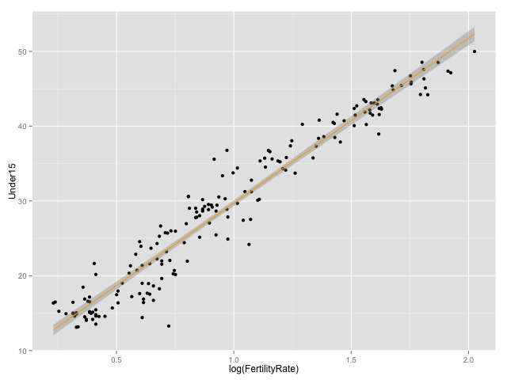
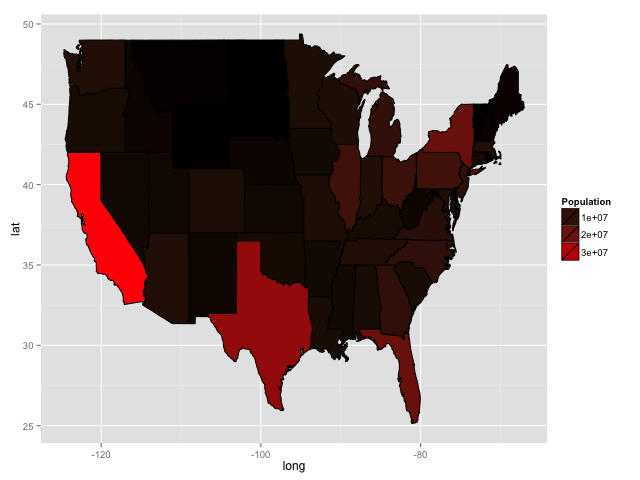
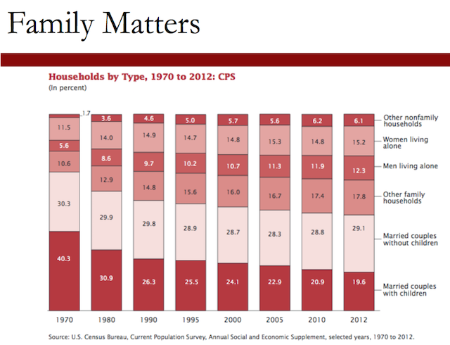
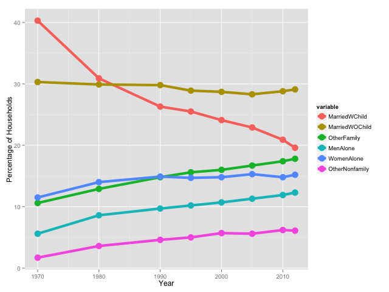

Unit 7 Visualization
Table of Contents
- 1. Visualizing the World: An Introduction to Visualization
- 1.1. Video 1: The Power of Visualizations
- 1.2. Quick Question (1 point possible)
- 1.3. Video 2: The World Health Organization (WHO)
- 1.4. Quick Question (1 point possible)
- 1.5. Video 3: What is Data Visualization?
- 1.6. Quick Question (4/4 points)
- 1.7. Video 4: Basic Scatterplots Using ggplot
- 1.8. Quick Question (1 point possible)
- 1.9. Video 5: Advanced Scatter plots Using ggplot
- 1.10. Quick Question (1 point possible)
- 2. The Analytical Policeman: Visualization for Law and Order
- 2.1. Video 1: Predictive Policing
- 2.2. Quick Question (1 point possible)
- 2.3. Video 2: Visualizing Crime Over Time
- 2.4. Quick Question (1 point possible)
- 2.5. Video 3: A Line Plot
- 2.6. Quick Question (2 points possible)
- 2.7. Video 4: A Heatmap
- 2.8. Quick Question (2 points possible)
- 2.9. Video 5: A Geographical Hot Spot Map
- 2.10. Quick Question (1 point possible)
- 2.11. Video 6: A Heatmap on the United States
- 2.12. Quick Question (1 point possible)
- 2.13. Video 7: The Analytics Edge
- 3. The Good, the Bad, and the Ugly: Visualization Recitation (Recitation)
Unit 7, Visualization tools in R, part of the Analytics Edge course.
1 Visualizing the World: An Introduction to Visualization
This week, we'll be discussing the power of visualizations for understanding worldwide trends and for using analytics to stop crime. In the first lecture, we'll use data from the World Health Organization to create visualizations that help us understand and communicate global health trends.

In the second lecture, we'll discuss predictive policing, and how police departments across the country are using data and analytics to improve decision making.
1.1 Video 1: The Power of Visualizations
We'll discuss the idea of using visualization to better understand data and to provide insights on the problem we're addressing.
Why visualization?
People often say that a picture is like a thousand words. In the same spirit, John Tukey, a major statistician at Princeton, wrote that "the picture-examining eye is the best finder we have of the wholly unanticipated."

Visualization is further useful for initial data exploration, for interpreting models, and for communicating results effectively.
Let us give some examples of different modes of visualization that illustrate these points. The figure shows the miles per gallon of a car as a function of the car's weight. The figure clearly illustrates that as the weight of the car increases, the miles per gallon decrease.

The same graph, but now colors of the points signify the number of cylinders in the car: four for red, six for green, and eight in blue.
On the same data, we now plot a regression line that captures the intuition that as the weight of the car increases, the miles per gallon decrease.
In this plot, we'll visualize burglaries in the city of Houston by combining data and geographical location in a map.

This plot illustrates, using a heat map, the usage of rented bicycles from the Hubway company. The horizontal axis is the hour of the day, and the vertical axis the day of the week, starting on Sunday. The heat map shows that the usage increases during the morning and night rush hours on weekdays.
The next plot helps us visualize histograms of different categories using the Hubway data.
This plot shows US unemployment by state. The lighter colors corresponding to smaller unemployment, and the darker colors corresponding to larger unemployment rates.
The plan this week is to create all of these visualizations. We'll see how visualizations can be used to better understand data, communicate information more effectively, show the results of analytical models.

1.2 Quick Question (1 point possible)
Normally, a scatterplot only allows us to visualize two dimensions - one on the x-axis, and one on the y-axis. In the previous video we were able to show a third dimension on the scatterplot using what attribute?
1.2.1 Answer
[X]Color Color - correct[ ]Shape[ ]Location
Explanation
On slide 3, we show the scatterplot from slide 2, but with the number of cylinders shown by the color of the points. This allows us to visualize a third dimension of our data.
1.3 Video 2: The World Health Organization (WHO)
The World Health Organization, WHO for short, is the authority for health within the United Nations system.

WHO communicates information about global health in order to inform citizens, donors, policymakers, and organizations around the world.
Their primary publication is World Health Report. Each issue focuses on a specific aspect of global health, and includes statistics and experts' assessments.
WHO also maintains an open, online repository of global health data. WHO provides some data visualizations, which helps them communicate more effectively with the public. As an example, the graph shows the World Energy Consumption during 2001 to 2003.

1.4 Quick Question (1 point possible)
Why is it particularly helpful for WHO to provide data visualizations? Select all that apply.
1.4.1 Answer
[ ]There is no other way to display information shown in visualizations like the Energy Consumption one.[X]When communicating information to the general public, a visualization like the Energy Consumption one is much easier to absorb than a table of numbers would be.[X]Visualizations can easily be used by policymakers and others who wish to present data from WHO.
Explanation
While there are other ways to display the data given in many visualizations (like tables), visualizations help to better communicate data to the public and can easily be used by others in presentations.
1.5 Video 3: What is Data Visualization?
We will discuss the meaning of data visualization, and why it's often useful to visualize your data to discover hidden trends and properties.
Data visualization is defined as a mapping of data properties to visual properties.
Data properties are usually numerical or categorical, like the mean of a variable, the maximum value of a variable, or the number of observations with a certain property.
Visual properties can be \((x,y)\) coordinates to plot points on a graph, colors to assign labels, sizes, shapes, heights, etc. Both types of properties are used to better understand the data, but in different ways.

To motivate the need for data visualization, let's look at a famous example called Anscombe's Quartet. Each of these tables corresponds to a different data set. We have four data sets, each with two variables, \(x\) and \(y\).
Just looking at the tables of data, it's hard to notice anything special about it. It turns out that the mean and variance of the \(x\) variable is the same for all four data sets, the mean and variance of the \(y\) variable is the same for all four data sets, and the correlation between \(x\) and \(y\), as well as the regression equation to predict \(y\) from \(x\), is the exact same for all four data sets.

So just by looking at data properties, we might conclude that these data sets are very similar. But if we plot the four data sets, they're very different.
These plots show the four data sets, with the x variable on the x-axis, and the y variable on the y-axis. Visually, these data sets look very different. But without visualizing them, we might not have noticed this.

This is one example of why visualizing data can be very important.
We'll use the ggplot2 package in R to create data visualizations. This package was created by Hadley Wickham, who described ggplot as "a plotting system for R based on the grammar of graphics, which tries to take the good parts of base and lattice graphics and none of the bad parts.

So what do we gain from using ggplot over just making plots using the basic R functions, or what's referred to as base R?
Well, in base R, each mapping of data properties to visual properties is its own special case. When we create a scatter plot, or a box plot, or a histogram, we have to use a completely different function.
It's challenging to create any sophisticated visualizations. It's also difficult to add elements to existing plots.

But in ggplot, the mapping of data properties to visual properties is done by just adding layers to the plot. This makes it much easier to create sophisticated plots and to add to existing plots.
So what is the grammar of graphics that ggplot is based on? All ggplot graphics consist of three elements. The first is data, in a data frame. The second is an aesthetic mapping, which describes how variables in the data frame are mapped to graphical attributes.
This is where we'll define which variables are on the x- and y-axes, whether or not points should be colored or shaped by certain attributes, etc.
The third element is which geometric objects we want to determine how the data values are rendered graphically. This is where we indicate if the plot should have points, lines, bars, boxes, etc.
1.6 Quick Question (4/4 points)
In this quick question, we'll be asking you questions about the following three plots, that we saw in Video 1. We'll refer to them as the "Scatterplot", the "Histogram", and the "US Map".
The Scatterplot:
The Histogram:

The US Map:
1.6.1 Question a
In the Scatterplot, what are the geometric objects?
[ ]Bars[X]Points Points - correct[ ]Lines[ ]Polygons[ ]Boxes
1.6.2 Question
In the Histogram, what are the geometric objects?
1.6.2.1 Answer
[X]Bars Bars - correct[ ]Points[ ]Lines[ ]Polygons[ ]Boxes
1.6.3 Question
In the US Map, what are the geometric objects?
1.6.3.1 Answer
[ ]Bars[ ]Points[ ]Lines[X]Polygons Polygons - correct[ ]Boxes
1.6.4 Question
All three of these plots defined a particular aesthetic property. What is it?
1.6.4.1 Answer
[ ]The x-axis label.[ ]The y-axis label.[ ]Different shapes for different types of observations.[X]Colors. Colors. - correct[ ]A legend.
Explanation
The geometric objects for the Scatterplot are points, for the Histogram are bars, and for the US Map are polygons (the states). All three plots defined colors in the plot.
1.7 Video 4: Basic Scatterplots Using ggplot
In the rest of this lecture, we'll be using the data file WHO.csv. Please download this file to your computer, and save it to a location that you will remember. This data comes from the Global Health Observatory Data Repository.
An R script file with all of the commands used in this lecture can be downloaded here.
Let's start by reading in our data. We'll be using the same data set we used during week one, WHO.csv.
1.7.1 Download the data sets
In this part we can download the data
library(parallel) if(!file.exists("../data")) { dir.create("../data") } fileUrl <- "https://courses.edx.org/asset-v1:MITx+15.071x_2a+2T2015+type@asset+block/WHO.csv" fileName <- "WHOu7.csv" dataPath <- "../data" filePath <- paste(dataPath, fileName, sep = "/") if(!file.exists(filePath)) { download.file(fileUrl, destfile = filePath, method = "curl") } list.files("../data")
[1] "AirlinesCluster.csv" "AnonymityPoll.csv" [3] "baseball.csv" "BoeingStock.csv" [5] "boston.csv" "ClaimsData.csv" [7] "ClaimsData.csv.zip" "climate_change.csv" [9] "clinical_trial.csv" "ClusterMeans.ods" [11] "CocaColaStock.csv" "CountryCodes.csv" [13] "CPSData.csv" "dailykos.csv" [15] "eBayiPadTest.csv" "eBayiPadTrain.csv" [17] "emails.csv" "energy_bids.csv" [19] "flower.csv" "FluTest.csv" [21] "FluTrain.csv" "framingham.csv" [23] "gerber.csv" "GEStock.csv" [25] "healthy.csv" "IBMStock.csv" [27] "loans_imputed.csv" "loans.csv" [29] "MetroAreaCodes.csv" "movieLens.txt" [31] "murders.csv" "mvt.csv" [33] "mvtWeek1.csv" "NBA_test.csv" [35] "NBA_train.csv" "parole.csv" [37] "pisa2009test.csv" "pisa2009train.csv" [39] "PollingData_Imputed.csv" "PollingData.csv" [41] "ProcterGambleStock.csv" "quality.csv" [43] "README.md" "SampleSubmission.csv" [45] "songs.csv" "stevens.csv" [47] "StocksCluster.csv" "stopwords.txt" [49] "tumor.csv" "tweets.csv" [51] "USDA.csv" "WHO_Europe.csv" [53] "WHO.csv" "WHOu7.csv" [55] "wiki.csv" "wine_test.csv" [57] "wine.csv"
1.7.2 Load the data set
writeLines("\n :: Loading data into their data frame.") WHO <- read.csv("../data/WHOu7.csv") str(WHO)
:: Loading data into their data frame. 'data.frame': 194 obs. of 13 variables: $ Country : Factor w/ 194 levels "Afghanistan",..: 1 2 3 4 5 6 7 8 9 10 ... $ Region : Factor w/ 6 levels "Africa","Americas",..: 3 4 1 4 1 2 2 4 6 4 ... $ Population : int 29825 3162 38482 78 20821 89 41087 2969 23050 8464 ... $ Under15 : num 47.4 21.3 27.4 15.2 47.6 ... $ Over60 : num 3.82 14.93 7.17 22.86 3.84 ... $ FertilityRate : num 5.4 1.75 2.83 NA 6.1 2.12 2.2 1.74 1.89 1.44 ... $ LifeExpectancy : int 60 74 73 82 51 75 76 71 82 81 ... $ ChildMortality : num 98.5 16.7 20 3.2 163.5 ... $ CellularSubscribers : num 54.3 96.4 99 75.5 48.4 ... $ LiteracyRate : num NA NA NA NA 70.1 99 97.8 99.6 NA NA ... $ GNI : num 1140 8820 8310 NA 5230 ... $ PrimarySchoolEnrollmentMale : num NA NA 98.2 78.4 93.1 91.1 NA NA 96.9 NA ... $ PrimarySchoolEnrollmentFemale: num NA NA 96.4 79.4 78.2 84.5 NA NA 97.5 NA ...
We can see that we have 194 observations, or countries, and 13 different variables– the name of the country, the region the country's in, the population in thousands, the percentage of the population under 15 or over 60, the fertility rate or average number of children per woman, the life expectancy in years, the child mortality rate, which is the number of children who die by age five per 1,000 births, the number of cellular subscribers per 100 population, the literacy rate among adults older than 15, the gross national income per capita, the percentage of male children enrolled in primary school, and the percentage of female children enrolled in primary school.
In week one, the very first plot we made in R was a scatterplot of fertility rate versus gross national income. Let's make this plot again, just like we did in week one.

Figure 23: WHO plot from week 1
This plot shows us that a higher fertility rate is correlated with a lower income. Now, let's redo this scatter plot, but this time using ggplot.
We'll see how ggplot can be used to make more visually appealing and complex scatter plots.
writeLines("\n :: Install new package: ggplot2 ...") ## install.packages('ggplot2', repos='http://cran.rstudio.com/') writeLines("\n :: NOTE: Please comment after install once...") library(ggplot2) writeLines("\n :: Library ggplot2 loaded...")
:: Install new package: ggplot2 ... :: NOTE: Please comment after install once... :: Library ggplot2 loaded...
Now, remember we need at least three things to create a plot using ggplot– data, an aesthetic mapping of variables in the data frame to visual output, and a geometric object. So first, let's create the ggplot object with the data and the aesthetic mapping.
We'll save it to the variable scatter plot, and then use the ggplot
function, where the first argument is the name of our data set, WHO,
which specifies the data to use, and the second argument is the
aesthetic mapping, aes.

Figure 24: WHO scatter plot with ggplot
Now, we need to tell ggplot what geometric objects to put in the plot. We could use bars, lines, points, or something else. This is a big difference between ggplot and regular plotting in R. You can build different types of graphs by using the same ggplot object.
There's no need to learn one function for bar graphs, a completely different function for line graphs, etc. So first, let's just create a straightforward scatter plot. So the geometry we want to add is points. We can do this by typing the name of our ggplot object, scatter plot, and then adding the function, geom_point().
You should see a new plot in the Graphics window that looks similar to our original plot, but there are already a few nice improvements. One is that we don't have the data set name with a dollar sign in front of the label on each axis, just the variable name.
Another is that we have these nice grid lines in the background and solid points that pop out from the background.
We could have made a line graph just as easily by changing point to line.
In addition to specifying that the geometry we want is points, we can
add other options, like the color, shape, and size of the
points. Let's redo our plot with blue triangles instead of circles. In
the empty parentheses for geom_point, we're going to specify some
properties of the points.
scatterplot + geom_point(color = "blue", size = 3, shape = 17)
Change blue to darkred, and change shape to 8. Now, you should see
dark red stars. There are many different colors and shapes that you
can specify. We've provided some information in the text below this
video.
Now, let's save our plot to a file. We can do this by first saving our plot to a variable.
fertilityGNIplot = scatterplot +
geom_point(colour = "blue", size = 3, shape = 17) +
~ggtitle("Fertility Rate vs. Gross National Income")
This will save our scatter plot to the variable,
fertilityGNIplot. Now, let's create a file we want to save our plot
to. We can do that with the pdf function.
pdf("MyPlot.pdf")
print(fertilityGNIplot)
dev.off()
1.7.3 Colors and shapes in R
If you want to see all of the available colors in R, type in your R console:
colors()
All of the available shapes are described in the following image:
The number 0 corresponds to an empty square, the number 6 corresponds to an upside down triangle, etc.
Source: This image comes from Cookbook for R.
1.8 Quick Question (1 point possible)
1.8.1 Question
In R, change the shape of your points to the number 15. What shape are the points now?
1.8.1.1 Answer
[ ]Circles[ ]Diamonds[ ]Crosses[X]Squares[ ]Stars
Explanation
If you type:
scatterplot + geom_point(shape = 15)
where scatterplot is the plot we created in the previous video, you can see that the points are squares.
1.9 Video 5: Advanced Scatter plots Using ggplot
Now, let's color the points by region instead. This time, we want to add a color option to our aesthetic, since we're assigning a variable in our data set to the colors.

Figure 26: Scatter plot of WHO by region
Now, in our plot, we should see that each point is colored corresponding to the region that country belongs in. So the countries in Africa are colored red, the countries in the Americas are colored gold, the countries in the Eastern Mediterranean are colored green, etc.
This really helps us see something that we didn't see before. The points from the different regions are really located in different areas on the plot. Let's now instead color the points according to the country's life expectancy.

Figure 27: Who scatter plot by life expectancy
Now, we should see that each point is colored according to the life expectancy in that country. Notice that before, we were coloring by a factor variable, Region.
So we had exactly seven different colors corresponding to the seven different regions. Here, we're coloring by LifeExpectancy instead, which is a numerical variable, so we get a gradient of colors, like this.
Lighter blue corresponds to a higher life expectancy, and darker blue corresponds to a lower life expectancy.
Suppose we were interested in seeing whether the fertility rate of a country was a good predictor of the percentage of the population under 15. Intuitively, we would expect these variables to be highly correlated. But before trying any statistical models, let's explore our data with a plot.
Figure 28: WHO fertility rate vs. population under 15
This is really interesting. It looks like the variables are certainly
correlated, but as the fertility rate increases, the variable,
Under15 starts increasing less.
So this doesn't really look like a linear relationship. But we suspect
that a log transformation of FertilityRate will be better. Let's
give it a shot.
Figure 29: WHO scatter plot of the logarithm of fertility rate vs under 15
Let's try building in a simple linear regression model to predict the percentage of the population under 15, using the log of the fertility rate.
writeLines("\n :: Simple linear regression model to predict the percentage\n of the population under 15, using the log of the fertility rate:") mod <- lm(Under15 ~ log(FertilityRate), data = WHO) summary(mod)
:: Simple linear regression model to predict the percentage
of the population under 15, using the log of the fertility rate:
Call:
lm(formula = Under15 ~ log(FertilityRate), data = WHO)
Residuals:
Min 1Q Median 3Q Max
-10.3131 -1.7742 0.0446 1.7440 7.7174
Coefficients:
Estimate Std. Error t value Pr(>|t|)
(Intercept) 7.6540 0.4478 17.09 <2e-16 ***
log(FertilityRate) 22.0547 0.4175 52.82 <2e-16 ***
---
Signif. codes: 0 ‘***’ 0.001 ‘**’ 0.01 ‘*’ 0.05 ‘.’ 0.1 ‘ ’ 1
Residual standard error: 2.65 on 181 degrees of freedom
(11 observations deleted due to missingness)
Multiple R-squared: 0.9391, Adjusted R-squared: 0.9387
F-statistic: 2790 on 1 and 181 DF, p-value: < 2.2e-16
Let's look at the summary of our model. It looks like the log of
FertilityRate is indeed a great predictor of Under15. The variable
is highly significant, and our R-squared is \(0.9391\).
Visualization was a great way for us to realize that the log
transformation would be better. If we instead had just used the
FertilityRate, the R-squared would have been \(0.87\). That's a pretty
significant decrease in R-squared.
So now, let's add this regression line to our plot. This is pretty easy in ggplot. We just have to add another layer.
Figure 30: WHO scatter plot of the fertility rate vs. under 15 with a linear regression model
Now, you should see a blue line going through the data. This is our regression line. By default, ggplot will draw a \(95\%\) confidence interval shaded around the line.
We can change this by specifying options within the statistics layer.
This will give a \(99\%\) confidence interval.
Figure 31: WHO scatter plot of fertility rate vs under 15 with regression model with 99%
We could instead take away the confidence interval altogether by deleting
level = 0.99
and typing
se = FALSE
Now, we just have the regression line in blue.
Figure 32: WHO Fertility rate vs. Under 15 with LM only
We could also change the color of the regression line by typing as an option
~color = "orange"~

Figure 33: WHO Fertility rate vs Under 15 with regression model in orange
Now, we have an orange linear regression line. As we've seen in this lecture, scatter plots are great for exploring data. However, there are many other ways to represent data visually, such as box plots, line charts, histograms, heat maps, and geographic maps.
In some cases, it may be better to choose one of these other ways of visualizing your data.
Luckily, ggplot makes it easy to go from one type of visualization to another, simply by adding the appropriate layer to the plot.
So what is the edge of visualizations?
The WHO data that we used here is used by citizens, policymakers, and organizations around the world.
Visualizing the data facilitates the understanding of global health trends at a glance.
By using ggplot in R, we're able to visualize data for exploration, modeling, and sharing analytics results.
1.10 Quick Question (1 point possible)
Create the fertility rate versus population under 15 plot again:
ggplot(WHO, aes(x = FertilityRate, y = Under15)) + geom_point()
Now, color the points by the Region variable.
Note: You can add scale_color_brewer(palette="Dark2") to your plot
if you are having a hard time distinguishing the colors (this color
palette is often better if you are colorblind). To use this option,
you should just add scale_color_brewer(palette="Dark2") to your
plotting command right after geom_point(). To find out more about
using ggplot in a colorblind-friendly way, please see this website.

Figure 35: Using a new palette to improve the readability of the plot
One region in particular has a lot of countries with a very low fertility rate and a very low percentage of the population under 15. Which region is it?
[ ]Africa[ ]Americas[ ]Eastern Mediterranean[X]Europe[ ]South-East Asia[ ]Western Pacific
Explanation
You can color the points by region if you adjust the command to the following:
ggplot(WHO, aes(x = FertilityRate, y = Under15, color=Region)) + geom_point()
Most of the countries in Europe have a very low fertility rate and a very low percentage of the population under 15.
2 The Analytical Policeman: Visualization for Law and Order
2.1 Video 1: Predictive Policing
We will discuss how visualization can offer insights in the area of policing in urban environments.
The explosion of computerized data affects all parts of society, including policing. In the past, human judgment and experience was the only tool in identifying patterns in criminal behavior.
Los Angeles police worked for months to catch Manson and his followers. These days the LAPD is on an offensive to prevent crime. Its latest weapon is a computer program that can actually predict where crimes will happen.
And justice correspondent Bob Orr has a first look at the results. In the Foothill Division north of downtown Los Angeles, police are patrolling the largely working-class neighborhoods with specially marked maps. The small red squares are hot spots, where computers project property crimes are most likely.
It's called predictive policing. A program which Captain Sean Malinowski says puts officers on the scene before crimes occur. 65% of our crimes are burglary, grand theft auto, and burglary for motor vehicle. And that's what these boxes represent. That's a pretty small box, 500 feet by 500 feet. Yes, it is a small area.
These crime prediction boxes come from the same kind of mathematical calculation used to predict earthquakes and aftershocks.
By analyzing the times, dates, and places of recent crimes computers project hot spots for burglaries, break-ins, and car thefts. LA's Police Chief Charlie Beck says increasing police patrols inside those boxes denies criminals opportunity. The real measure of this is not how many people you catch, it's how much crime you prevent.
I love catching people. It's what I live for. But, what I'd rather do is live in a place and work in a place where crime didn't happen.
Chief Beck, a 35-year veteran and the father of two LAPD officers, has faced some skepticism in selling the predictive concept.
- You're a street cop. -
- I am. -
- So somebody comes to you with a computer program that says, here we're going to predict the future, we're going to tell you where crime is going to occur.
Aren't some of the guys on the street just going to roll their eyes and say, oh come on?
- Well, of course.
- I mean, that's the nature of human beings.
I mean everybody thinks that they do their profession as well as it can be done already, so they don't need any help.
If this old street cop can change the way that he thinks about this stuff, then I know that my kids can do the same.
The LAPD began testing the predictive policing model here in the Foothill Division in November, and the early results are encouraging.
The LAPD began testing the predictive policing model here in the Foothill Division in November, and the early results are encouraging. Burglaries are down 33%, and violent crime is also down 21%.
That success will allow Beck to expand the program to other parts of the city and leverage limited resources.
- I'm not going to get more money. I'm not going to get more cops. But I have to be better at using what I have, and that's what predictive policing is about.
It's also about driving the crime rate lower. Crime here has dropped nine straight years. With these small red boxes, LA is aiming for 10. Bob Orr, CBS News, Los Angeles. (End TV report).
The Los Angeles Police Chief Charlie Beck writes, "I'm not going to get more money. I'm not going to get more cops.
Let me comment on the role of analytics. The analytical tools you have learned in this class can be used to make these predictive policing models possible.
However, communicating the results of these models is critical. A linear regression output table will not be of use to a police person on patrol. Visualization bridges the gap between the analytics and the end user.
2.2 Quick Question (1 point possible)
2.2.1 Question
The Los Angeles Police Department sees the benefits of predictive policing as which of the following? Select all that apply.
2.2.1.1 Answer
[X]Allowing more intelligent officer deployment[ ]Eliminating the need for police officers[X]Preventing crime[ ]Catching criminals[X]Using resources more effectively
Explanation
According the the Los Angeles Police Department, predictive policing does not eliminate the need for police officers or increase the rate at which they catch criminals. It does, however, allow more intelligent officer deployment, prevents crime, and helps them use resources more effectively.
2.3 Video 2: Visualizing Crime Over Time
We will discuss how we can create visualizations that are used in predictive policing models. In almost every application, before we even consider a predictive model, we should try to understand the historical data.
We will use data from the city of Chicago, in the United States, about motor vehicle thefts.
Given this data on crimes, suppose we wanted to communicate crime patterns over the course of an average week. We could display daily crime averages using a line graph, like the one shown here, but this doesn't seem too useful.
We can see that crime tends to be higher on Saturday, but when on Saturday, and where?
We could replace our x-axis with the hour of the day and have a different line for every day of the week to understand when crime occurs in more detail. But this would be a jumbled mess with seven lines, and probably very hard to read.
We could instead use no visualization at all, and instead present information in a table, like the one shown here. For each hour and day, we have the total number of crimes that occurred. This is a valid representation of the data, but large tables of numbers can be hard to read and understand.
So how can we make the table more interesting and usable? A great way to visualize information in a two-dimensional table is with a heat map.
Heat maps visualize data using three attributes. Two of the attributes are on the x and y-axes, typically displayed horizontally and vertically.
The third attribute is represented by shades of color. In this example, lower values in the third attribute correspond to colors closer to blue, and higher values in the third attribute correspond to colors closer to red.
For example, the x-axis could be hours of the day, the y-axis could be days of the week, and the colors could correspond to the amount of crime.
In a heat map, we can pick different color schemes based on the type of data to convey different messages.
In crime, a yellow to red color scheme might be appropriate because it can highlight some of the more dangerous areas in red. Your eye is naturally drawn to the red areas of the plot.
In other applications, both high and low values are meaningful, so having a more varied color scheme might be useful.
And in other applications, you might only want to see cells with high values, so you could use a gray scale to make the cells with low values white.
The x and y-axes in a heat map don't need to be continuous. In our example, we have a categorical or factor variable – the day of the week. And we can even combine a heat map with a geographical map, which we'll discuss later in this lecture.
This type of heat map is frequently used in predictive policing to show crime hot spots in a city. In this lecture, we'll use Chicago motor vehicle theft data to explore patterns of crime, both over days of the week, and over hours of the day.
We are interested in analyzing the total number of car thefts that occur in any particular hour of a day of the week over our whole data set.
2.4 Quick Question (1 point possible)
2.4.1 Question
For which of the following situations would a heat map be an appropriate visualization choice? Select all that apply.
2.4.1.1 Answer
[ ]Determining if crime is higher or lower on warmer days[X]Visualizing the areas on a geographical map with the most crime[X]Comparing crime counts by police district and time throughout a city[ ]Analyzing which months of the year have the most crime on average
Explanation
A heatmap would be useful for the middle two options, because they are trying to visualize crime counts relative to two variables. For the first option, you could use a basic scatterplot with time on the x-axis and amount of crime on the y-axis. For the last option, you could use a bar plot with a bar for each month and the height being the average amount of crime in that month.
2.5 Video 3: A Line Plot
In the next few videos, we'll be using the dataset mvt.csv. Please download this dataset before starting this video. This data comes from the Chicago Police Department.
An R script file with all of the commands used in this lecture can be downloaded here.
2.5.1 Download the data sets
In this part we can download the data
library(parallel) if(!file.exists("../data")) { dir.create("../data") } fileUrl <- "https://courses.edx.org/asset-v1:MITx+15.071x_2a+2T2015+type@asset+block/mvt.csv" fileName <- "mvt.csv" dataPath <- "../data" filePath <- paste(dataPath, fileName, sep = "/") if(!file.exists(filePath)) { download.file(fileUrl, destfile = filePath, method = "curl") } list.files("../data")
[1] "AirlinesCluster.csv" "AnonymityPoll.csv" [3] "baseball.csv" "BoeingStock.csv" [5] "boston.csv" "ClaimsData.csv" [7] "ClaimsData.csv.zip" "climate_change.csv" [9] "clinical_trial.csv" "ClusterMeans.ods" [11] "CocaColaStock.csv" "CountryCodes.csv" [13] "CPSData.csv" "dailykos.csv" [15] "eBayiPadTest.csv" "eBayiPadTrain.csv" [17] "emails.csv" "energy_bids.csv" [19] "flower.csv" "FluTest.csv" [21] "FluTrain.csv" "framingham.csv" [23] "gerber.csv" "GEStock.csv" [25] "healthy.csv" "IBMStock.csv" [27] "loans_imputed.csv" "loans.csv" [29] "MetroAreaCodes.csv" "movieLens.txt" [31] "murders.csv" "mvt.csv" [33] "mvtWeek1.csv" "NBA_test.csv" [35] "NBA_train.csv" "parole.csv" [37] "pisa2009test.csv" "pisa2009train.csv" [39] "PollingData_Imputed.csv" "PollingData.csv" [41] "ProcterGambleStock.csv" "quality.csv" [43] "README.md" "SampleSubmission.csv" [45] "songs.csv" "stevens.csv" [47] "StocksCluster.csv" "stopwords.txt" [49] "tumor.csv" "tweets.csv" [51] "USDA.csv" "WHO_Europe.csv" [53] "WHO.csv" "WHOu7.csv" [55] "wiki.csv" "wine_test.csv" [57] "wine.csv"
2.5.2 Load the data set
writeLines("\n :: Loading data into their data frame.") mvt <- read.csv("../data/mvt.csv", stringsAsFactors=FALSE) str(mvt)
:: Loading data into their data frame. 'data.frame': 191641 obs. of 3 variables: $ Date : chr "12/31/12 23:15" "12/31/12 22:00" "12/31/12 22:00" "12/31/12 22:00" ... $ Latitude : num 41.8 41.9 42 41.8 41.8 ... $ Longitude: num -87.6 -87.7 -87.8 -87.7 -87.6 ...
We will create a basic line plot to visualize crime trends. Let's start by reading in our data. We'll call it mvt for motor vehicle thefts.
Let's take a look at the structure of our data using the str
function. We have over 190,000 observations of three different
variables– the date of the crime, and the location of the crime, in
terms of latitude and longitude.
We want to first convert the Date variable to a format that R will recognize so that we can extract the day of the week and the hour of the day.
We can do this using the strptime function. So we want to replace
our variable, Date, with the output of the strptime function.
writeLines("\n :: Convert the Date variable to a format that R will recognize...") mvt$Date <- strptime(mvt$Date, format = "%m/%d/%y %H:%M")
:: Convert the Date variable to a format that R will recognize...
In this format, we can extract the hour and the day of the week from the Date variable, and we can add these as new variables to our data frame. We can do this by first defining our new variable.
writeLines("\n :: Extract the hour and the day of the week...") mvt$Weekday <- weekdays(mvt$Date) mvt$Hour <- mvt$Date$hour
:: Extract the hour and the day of the week...
Let's take a look at the structure of our data again to see what it looks like.
writeLines("\n :: Revising the structure of the dataframe mvt:")
str(mvt)
:: Revising the structure of the dataframe mvt: 'data.frame': 191641 obs. of 5 variables: $ Date : POSIXlt, format: "2012-12-31 23:15:00" "2012-12-31 22:00:00" ... $ Latitude : num 41.8 41.9 42 41.8 41.8 ... $ Longitude: num -87.6 -87.7 -87.8 -87.7 -87.6 ... $ Weekday : chr "Monday" "Monday" "Monday" "Monday" ... $ Hour : int 23 22 22 22 21 20 20 20 19 18 ...
Now, we have two more variables– Weekday, which gives the day of the week, and Hour, which gives the hour of the day. Now, we're ready to make some line plots. Let's start by creating the line plot we saw in the previous video with just one line and a value for every day of the week.
We want to plot as that value the total number of crimes on each day of the week.
writeLines("\n :: Need the total number of crimes on each day of the week:") sort(table(mvt$Weekday), decreasing = TRUE)
:: Need the total number of crimes on each day of the week: Friday Wednesday Monday Thursday Saturday Tuesday Sunday 29284 27416 27397 27319 27118 26791 26316
This gives the total amount of crime on each day of the week. Let's save this table as a data frame so that we can pass it to ggplot as our data.
writeLines("\n :: Save this table as a data frame:") WeekdayCounts <- as.data.frame(table(mvt$Weekday)) str(WeekdayCounts)
:: Save this table as a data frame: 'data.frame': 7 obs. of 2 variables: $ Var1: Factor w/ 7 levels "Friday","Monday",..: 1 2 3 4 5 6 7 $ Freq: int 29284 27397 27118 26316 27319 26791 27416
We can see that our data frame has seven observations, one for each day of the week, and two different variables. The first variable, called Var1, gives the name of the day of the week, and the second variable, called Freq, for frequency, gives the total amount of crime on that day of the week.
Now, we're ready to make our plot. First, we need to load the ggplot2 package.
Figure 47: MVT Chicago crime plot
Now, we just need to add geom_line(aes(group=1)). This just groups
all of our data into one line, since we want one line in our plot.
We can see that this is very close to the plot we want. We have the total number of crime plotted by day of the week, but our days of the week are a little bit out of order. We have Friday first, then Monday, then Saturday, then Sunday, etc.
What ggplot did was it put the days of the week in alphabetical
order. But we actually want the days of the week in chronological
order to make this plot a bit easier to read. We can do this by making
the Var1 variable an ordered factor variable.
This signals to ggplot that the ordering is meaningful. We can do this by using the factor function.

Figure 48: MVT Chicago crime plot v2
We have the total crime by day of the week with the days of the week in chronological order. The last thing we'll want to do to our plot is just change the x- and y-axis labels, since they're not very helpful as they are now.
Figure 49: MVT Chicago crime plot v3
Now, this is the plot we were trying to generate with descriptive labels on the x- and y-axis.
2.6 Quick Question (2 points possible)
Create a new line plot, like the one in Video 3, but add the argument
linetype = 2. So the geom_line part of the plotting command should
look like:
geom_line(aes(group=1), linetype=2)
Figure 50: MVT Chicago crime plot v4
2.6.1 Question a
What does this do?
2.6.1.1 Answer
[ ]Makes the line thicker[ ]Changes the color of the line to blue[X]Makes the line dashed[ ]Makes the line lighter in color
2.6.2 Question
Now, change the alpha parameter to 0.3 by replacing linetype = 2
with alpha = 0.3 in the plot command. What does this do?
Figure 51: MVT Chicago crime plot v5
2.6.2.1 Answer
[ ]Makes the line thicker[ ]Changes the color of the line to blue[ ]Makes the line dashed[X]Makes the line lighter in color
Explanation
The linetype parameter makes the line dashed, and the alpha parameter makes the line lighter in color, or more transparent. The two plots can be generated with the following commands:
ggplot(WeekdayCounts, aes(x = Var1, y = Freq)) +
geom_line(aes(group=1), linetype=2) + xlab("Day of the Week") +
ylab("Total Motor Vehicle Thefts")
ggplot(WeekdayCounts, aes(x = Var1, y = Freq)) +
geom_line(aes(group=1), alpha=0.3) + xlab("Day of the Week") +
ylab("Total Motor Vehicle Thefts")
2.7 Video 4: A Heatmap
we'll add the hour of the day to our line plot, and then create an alternative visualization using a heat map. We can do this by creating a line for each day of the week and making the x-axis the hour of the day. We first need to create a counts table for the weekday, and hour.
writeLines("\n :: Create a counts table for the weekday and hour:")
table(mvt$Weekday, mvt$Hour)
:: Create a counts table for the weekday and hour:
0 1 2 3 4 5 6 7 8 9 10 11 12
Friday 1873 932 743 560 473 602 839 1203 1268 1286 938 822 1207
Monday 1900 825 712 527 415 542 772 1123 1323 1235 971 737 1129
Saturday 2050 1267 985 836 652 508 541 650 858 1039 946 789 1204
Sunday 2028 1236 1019 838 607 461 478 483 615 864 884 787 1192
Thursday 1856 816 696 508 400 534 799 1135 1298 1301 932 731 1093
Tuesday 1691 777 603 464 414 520 845 1118 1175 1174 948 786 1108
Wednesday 1814 790 619 469 396 561 862 1140 1329 1237 947 763 1225
13 14 15 16 17 18 19 20 21 22 23
Friday 857 937 1140 1165 1318 1623 1652 1736 1881 2308 1921
Monday 824 958 1059 1136 1252 1518 1503 1622 1815 2009 1490
Saturday 767 963 1086 1055 1084 1348 1390 1570 1702 2078 1750
Sunday 789 959 1037 1083 1160 1389 1342 1706 1696 2079 1584
Thursday 752 831 1044 1131 1258 1510 1537 1668 1776 2134 1579
Tuesday 762 908 1071 1090 1274 1553 1496 1696 1816 2044 1458
Wednesday 804 863 1075 1076 1289 1580 1507 1718 1748 2093 1511
This table gives, for each day of the week and each hour, the total number of motor vehicle thefts that occurred. For example, on Friday at 4 AM, there were 473 motor vehicle thefts, whereas on Saturday at midnight, there were 2,050 motor vehicle thefts. Let's save this table to a data frame so that we can use it in our visualizations.
writeLines("\n :: Save this to a data frame:") DayHourCounts <- as.data.frame(table(mvt$Weekday, mvt$Hour)) str(DayHourCounts)
:: Save this to a data frame: 'data.frame': 168 obs. of 3 variables: $ Var1: Factor w/ 7 levels "Friday","Monday",..: 1 2 3 4 5 6 7 1 2 3 ... $ Var2: Factor w/ 24 levels "0","1","2","3",..: 1 1 1 1 1 1 1 2 2 2 ... $ Freq: int 1873 1900 2050 2028 1856 1691 1814 932 825 1267 ...
Let's take a look at the structure of the data frame we just created. We can see that we have 168 observations– one for each day of the week and hour pair, and three different variables.
The first variable, Var1, gives the day of the week. The second
variable, ~Var2, gives the hour of the day. And the third variable,
Freq for frequency, gives the total crime count.
Let's convert the second variable, Var2, to actual numbers and call
it Hour, since this is the hour of the day, and it makes sense that
it's numerical.
writeLines("\n :: Convert the second variable, Var2, to numbers and call it Hour...") DayHourCounts$Hour <- as.numeric(as.character(DayHourCounts$Var2))
:: Convert the second variable, Var2, to numbers and call it Hour...
This is how we convert a factor variable to a numeric variable. Now
we're ready to create our plot. We just need to change the group to
Var1, which is the day of the week.
Figure 52: MVT Chicago heat plot v1
You should see a new plot show up in the graphics window. It has seven lines, one for each day of the week. While this is interesting, we can't tell which line is which day, so let's change the colors of the lines to correspond to the days of the week.
Figure 53: MVT heat crime plot v2
Now in our plot, each line is colored corresponding to the day of the week. This helps us see that on Saturday and Sunday, for example, the green and the teal lines, there's less motor vehicle thefts in the morning.
Working a little with the plot:
writeLines("\n :: Separate the weekends from the weekdays...") DayHourCounts$Type <- ifelse((DayHourCounts$Var1 == "Sunday") | (DayHourCounts$Var1 == "Saturday"), "Weekend", "Weekday")
:: Separate the weekends from the weekdays...
Figure 54: MVT heat plot previous v3
This configuration is little hard to read too, we can try again and see if is possible to improve the visualization.
Figure 55: MVT heat crime plot v4
While we can get some information from this plot, it's still quite hard to interpret. Seven lines is a lot.
Let's instead visualize the same information with a heat map. To make
a heat map, we'll use our data in our data frame
DayHourCounts. First, though, we need to fix the order of the days
so that they'll show up in chronological order instead of in
alphabetical order.
writeLines("\n :: Fix the order of the days...") DayHourCounts$Var1 <- factor(DayHourCounts$Var1, ordered = TRUE, levels = c("Monday", "Tuesday", "Wednesday", "Thursday", "Friday", "Saturday", "Sunday"))
:: Fix the order of the days...
Now let's make our heat map. In the aesthetic for our tiles, we want
the fill to be equal to Freq. This will define the colors of the
rectangles in our heat map to correspond to the total crime.
Figure 56: New MVT heat Chicago crime plot v1
So how do we read this? For each hour and each day of the week, we have a rectangle in our heat map. The color of that rectangle indicates the frequency, or the number of crimes that occur in that hour and on that day.
Our legend tells us that lighter colors correspond to more crime. So we can see that a lot of crime happens around midnight, particularly on the weekends.
We can change the label on the legend, and get rid of the y label to make our plot a little nicer.
Figure 57: MVT Chicago's heat crime plot v2
We can also change the color scheme.
Figure 58: MVT Chicago's heat crime plot v3
This is a common color scheme in policing. It shows the hot spots, or the places with more crime, in red. So now the most crime is shown by the red spots and the least crime is shown by the lighter areas.
It looks like Friday night is a pretty common time for motor vehicle thefts. We saw something that we didn't really see in the heat map before.
It's often useful to change the color scheme depending on whether you want high values or low values to pop out, and the feeling you want the plot to portray.
2.8 Quick Question (2 points possible)
In this quick question, we'll ask you questions about the following plots. Plot (1) is the heat map we generated at the end of Video 4. Plot (2) and Plot (3) were generated by changing argument values of the command used to generate Plot (1).
Plot (1)
Plot (2)
Plot (3)
2.8.1 Question a
Figure 62: Rotating MVT heat plot QQa
Which argument(s) did we change to get Plot (2)? Select all that apply.
[X]x[X]y[ ]fill[ ]name[ ]low[ ]high
Explanation
To get Plot (2), we changed the arguments "x" and "y" (we flipped them). Plot (2) can be generated with the following code:
ggplot(DayHourCounts, aes(x = Var1, y = Hour)) +
geom_tile(aes(fill=Freq)) + scale_fill_gradient(name="Total MV
Thefts", low="white", high="red") +
theme(axis.title.y=element_blank())
2.8.2 Question
Figure 63: MVT heat plot QQb
Which argument(s) did we change to get Plot (3)? Select all that apply.
[ ]x[ ]y[ ]fill[ ]name[ ]low[X]high
Explanation
To get Plot (3), we changed the argument "high" to "black". Plot (3) can be generated with the following code:
ggplot(DayHourCounts, aes(x = Hour, y = Var1)) +
geom_tile(aes(fill=Freq)) + scale_fill_gradient(name="Total MV
Thefts", low="white", high="black") +
theme(axis.title.y=element_blank())
2.9 Video 5: A Geographical Hot Spot Map
We will plot crime on a map of Chicago. First, we need to install and
load two new packages, the maps package and the ggmap package.
writeLines("\n :: Install new package: maps ...") ## install.packages(c('maps', 'ggmap'), repos='http://cran.rstudio.com/') writeLines("\n :: NOTE: Please comment after install once...") library(maps) library(ggmap) writeLines("\n :: Library maps loaded...")
:: Install new package: maps ...
:: NOTE: Please comment after install once...
Google Maps API Terms of Service: http://developers.google.com/maps/terms.
Please cite ggmap if you use it: see citation('ggmap') for details.
:: Library maps loaded...
writeLines("\n :: Load a map of Chicago into R...") chicago <- get_map(location = "chicago", zoom = 11)
:: Load a map of Chicago into R... Map from URL : http://maps.googleapis.com/maps/api/staticmap?center=chicago&zoom=11&size=640x640&scale=2&maptype=terrain&language=en-EN&sensor=false Information from URL : http://maps.googleapis.com/maps/api/geocode/json?address=chicago&sensor=false
Figure 64: MVT Chicago's crime map v1
You should see a geographical map of the city of Chicago. Now let's plot the first 100 motor vehicle thefts in our data set on this map.
Figure 65: MVT Chicago's crime map v2
You should see the map of Chicago with black points marking where the first 100 motor vehicle thefts were. If we plotted all 190,000 motor vehicle thefts, we would just see a big black box, which wouldn't be helpful at all.
We're more interested in whether or not an area has a high amount of crime, so let's round our latitude and longitude to two digits of accuracy and create a crime counts data frame for each area.
writeLines("\n :: Round our latitude and longitude to 2 digits of accuracy,\nand create a crime counts data frame for each area:") LatLonCounts <- as.data.frame(table(round(mvt$Longitude, 2), round(mvt$Latitude, 2))) str(LatLonCounts)
:: Round our latitude and longitude to 2 digits of accuracy, and create a crime counts data frame for each area: 'data.frame': 1638 obs. of 3 variables: $ Var1: Factor w/ 42 levels "-87.93","-87.92",..: 1 2 3 4 5 6 7 8 9 10 ... $ Var2: Factor w/ 39 levels "41.64","41.65",..: 1 1 1 1 1 1 1 1 1 1 ... $ Freq: int 0 0 0 0 0 0 0 0 0 0 ...
This gives us the total crimes at every point on a grid. Let's take a
look at our data frame using the str function. We have 1,638
observations and three variables.
The first two variables, Var1 and Var2, are the latitude and
longitude coordinates, and the third variable is the number of motor
vehicle thefts that occur in that area.
Let's convert our longitude and latitude variables to numbers and call
them Lat and Long.
writeLines("\n :: Convert our Longitude and Latitude variable to numbers...") LatLonCounts$Long <- as.numeric(as.character(LatLonCounts$Var1)) LatLonCounts$Lat <- as.numeric(as.character(LatLonCounts$Var2))
:: Convert our Longitude and Latitude variable to numbers...
Now, let's plot these points on our map, making the size and color of the points depend on the total number of motor vehicle thefts.
Figure 66: MVT Chicago's crime map v3
So we can see that the lighter and larger points correspond to more motor vehicle thefts. This helps us see where in Chicago more crimes occur. If we want to change the color scheme,
Figure 67: MVT Chicago's crime map v4
you should see the same plot as before, but this time, the areas with more crime are closer to red and the areas with less crime are closer to yellow.
We can also use geom_tile to make something that looks more like a traditional heat map.
Figure 68: MVT Chicago's crime map v5
We have alpha=Freq. This will define how to scale the colors on the
heat map according to the crime counts.
We've created a geographical heat map, which in our case shows a visualization of the data, but it could also show the predictions of a model. Now that our heat map is loaded, let's take a look.
In each area of Chicago, now that area is colored in red by the amount of crime there. This looks more like a map that people use for predictive policing.
2.10 Quick Question (1 point possible)
In the previous video, our heatmap was plotting squares out in the
water, which seems a little strange. We can fix this by removing the
observations from our data frame that have Freq = 0.
Take a subset of LatLonCounts, only keeping the observations for which
Freq > 0, and call it LatLonCounts2.
writeLines("\n :: removing the observations that have Freq = 0...") str(LatLonCounts) LatLonCounts2 <- subset(LatLonCounts, LatLonCounts$Freq > 0) writeLines("\n :: The number of observations removed:") nrow(LatLonCounts) - nrow(LatLonCounts2)
:: removing the observations that have Freq = 0... 'data.frame': 1638 obs. of 5 variables: $ Var1: Factor w/ 42 levels "-87.93","-87.92",..: 1 2 3 4 5 6 7 8 9 10 ... $ Var2: Factor w/ 39 levels "41.64","41.65",..: 1 1 1 1 1 1 1 1 1 1 ... $ Freq: int 0 0 0 0 0 0 0 0 0 0 ... $ Long: num -87.9 -87.9 -87.9 -87.9 -87.9 ... $ Lat : num 41.6 41.6 41.6 41.6 41.6 ... :: The number of observations removed: [1] 952
Redo the heatmap from the end of Video 5, using LatLonCounts2
instead of LatLonCounts. You should no longer see any squares out in
the water, or in any areas where there were no motor vehicle thefts.
Figure 69: MVT Chicago's crime map v6
2.10.1 Question
How many observations did we remove?
2.10.1.1 Answer
952
Explanation
You can take a subset of LatLonCounts, only keeping the observations
for which Freq > 0 with the following command:
LatLonCounts2 = subset(LatLonCounts, Freq > 0)
Then, you can generate the new heatmap with the following command:
ggmap(chicago) +
geom_tile(data=LatLonCounts2, aes(x = Long, y = Lat, alpha=Freq), fill="red")
4
The number of observations in LatLonCounts2 is $686, and the number of
observations in LatLonCounts is \(1638\). These numbers can be found by
using nrow or str.
2.11 Video 6: A Heatmap on the United States
In this video, we'll be using the dataset murders.csv. This data is provided by the U.S. Census Bureau and the FBI, and is described here.
We will create a heat map on a map of the United States. We'll be using the data set murders.csv, which is data provided by the FBI giving the total number of murders in the United States by state.
2.11.1 Download the data sets
In this part we can download the data
library(parallel) if(!file.exists("../data")) { dir.create("../data") } fileUrl <- "https://courses.edx.org/asset-v1:MITx+15.071x_2a+2T2015+type@asset+block/murders.csv" fileName <- "murders.csv" dataPath <- "../data" filePath <- paste(dataPath, fileName, sep = "/") if(!file.exists(filePath)) { download.file(fileUrl, destfile = filePath, method = "curl") } list.files("../data")
[1] "AirlinesCluster.csv" "AnonymityPoll.csv" [3] "baseball.csv" "BoeingStock.csv" [5] "boston.csv" "ClaimsData.csv" [7] "ClaimsData.csv.zip" "climate_change.csv" [9] "clinical_trial.csv" "ClusterMeans.ods" [11] "CocaColaStock.csv" "CountryCodes.csv" [13] "CPSData.csv" "dailykos.csv" [15] "eBayiPadTest.csv" "eBayiPadTrain.csv" [17] "emails.csv" "energy_bids.csv" [19] "flower.csv" "FluTest.csv" [21] "FluTrain.csv" "framingham.csv" [23] "gerber.csv" "GEStock.csv" [25] "healthy.csv" "IBMStock.csv" [27] "loans_imputed.csv" "loans.csv" [29] "MetroAreaCodes.csv" "movieLens.txt" [31] "murders.csv" "mvt.csv" [33] "mvtWeek1.csv" "NBA_test.csv" [35] "NBA_train.csv" "parole.csv" [37] "pisa2009test.csv" "pisa2009train.csv" [39] "PollingData_Imputed.csv" "PollingData.csv" [41] "ProcterGambleStock.csv" "quality.csv" [43] "README.md" "SampleSubmission.csv" [45] "songs.csv" "stevens.csv" [47] "StocksCluster.csv" "stopwords.txt" [49] "tumor.csv" "tweets.csv" [51] "USDA.csv" "WHO_Europe.csv" [53] "WHO.csv" "WHOu7.csv" [55] "wiki.csv" "wine_test.csv" [57] "wine.csv"
2.11.2 Load the data set
writeLines("\n :: Loading data into their data frame.") murders <- read.csv("../data/murders.csv") str(murders)
:: Loading data into their data frame. 'data.frame': 51 obs. of 6 variables: $ State : Factor w/ 51 levels "Alabama","Alaska",..: 1 2 3 4 5 6 7 8 9 10 ... $ Population : int 4779736 710231 6392017 2915918 37253956 5029196 3574097 897934 601723 19687653 ... $ PopulationDensity: num 94.65 1.26 57.05 56.43 244.2 ... $ Murders : int 199 31 352 130 1811 117 131 48 131 987 ... $ GunMurders : int 135 19 232 93 1257 65 97 38 99 669 ... $ GunOwnership : num 0.517 0.578 0.311 0.553 0.213 0.347 0.167 0.255 0.036 0.245 ...
Let's take a look at the structure of this data using the str
function. We have 51 observations for the 50 states plus Washington,
DC, and six different variables:
The name of the state, the population, the population density, the number of murders, the number of murders that used guns, and the rate of gun ownership.
A map of the United States is included in R. Let's load the map and
call it statesMap.
writeLines("\n :: Load the map of the US...") statesMap <- map_data("state") str(statesMap)
:: Load the map of the US... 'data.frame': 15537 obs. of 6 variables: $ long : num -87.5 -87.5 -87.5 -87.5 -87.6 ... $ lat : num 30.4 30.4 30.4 30.3 30.3 ... $ group : num 1 1 1 1 1 1 1 1 1 1 ... $ order : int 1 2 3 4 5 6 7 8 9 10 ... $ region : chr "alabama" "alabama" "alabama" "alabama" ... $ subregion: chr NA NA NA NA ...
Let's see what this looks like by typing in str(statesMap). This is
just a data frame summarizing how to draw the United States. To plot
the map, we'll use the polygons geometry of ggplot.
Figure 70: US murder map v1
Now in your R graphics window, you should see a map of the United
States. Before we can plot our data on this map, we need to make sure
that the state names are the same in the murders data frame and in the
statesMap data frame.
In the murders data frame, our state names are in the State variable,
and they start with a capital letter. But in the statesMap data frame,
our state names are in the region variable, and they're all
lowercase.
So let's create a new variable called region in our murders data
frame to match the state name variable in the statesMap data
frame. So we'll add to our murders data frame the variable region,
which will be equal to the lowercase version– using the tolower
function that we used in the text analytics lectures.
writeLines("\n :: Create a new variable called region with the\nlowercase names to match the statesMap...") murders$region <- tolower(murders$State)
:: Create a new variable called region with the lowercase names to match the statesMap...
This will just convert the State variable to all lowercase letters
and store it as a new variable called region.
Now we can join the statesMap data frame with the murders data
frame by using the merge function, which matches rows of a data
frame based on a shared identifier.
We just defined the variable region, which exists in both data
frames.
writeLines("\n :: Join the statesMap data and the murders data into one dataframe:") murderMap <- merge(statesMap, murders, by = "region") str(murderMap)
:: Join the statesMap data and the murders data into one dataframe: 'data.frame': 15537 obs. of 12 variables: $ region : chr "alabama" "alabama" "alabama" "alabama" ... $ long : num -87.5 -87.5 -87.5 -87.5 -87.6 ... $ lat : num 30.4 30.4 30.4 30.3 30.3 ... $ group : num 1 1 1 1 1 1 1 1 1 1 ... $ order : int 1 2 3 4 5 6 7 8 9 10 ... $ subregion : chr NA NA NA NA ... $ State : Factor w/ 51 levels "Alabama","Alaska",..: 1 1 1 1 1 1 1 1 1 1 ... $ Population : int 4779736 4779736 4779736 4779736 4779736 4779736 4779736 4779736 4779736 4779736 ... $ PopulationDensity: num 94.7 94.7 94.7 94.7 94.7 ... $ Murders : int 199 199 199 199 199 199 199 199 199 199 ... $ GunMurders : int 135 135 135 135 135 135 135 135 135 135 ... $ GunOwnership : num 0.517 0.517 0.517 0.517 0.517 0.517 0.517 0.517 0.517 0.517 ...
We have the same number of observations here that we had in the
statesMap data frame, but now we have both the variables from the
statesMap data frame and the variables from the murders data
frame, which were matched up based on the region variable.
So now, let's plot the number of murders on our map of the United States.
Figure 71: US murder map v2
Look at your graphics window now, you should see that each of the states is colored by the number of murders in that state. States with a larger number of murders are more red. So it looks like California and Texas have the largest number of murders.
But is that just because they're the most populous states? Let's create a map of the population of each state to check.

Figure 72: US population map v1
We have a population map here which looks exactly the same as our murders map. So we need to plot the murder rate instead of the number of murders to make sure we're not just plotting a population map.
writeLines("\n :: Create a new variable that is the number of murders per\n\t100,000 population...") murderMap$MurderRate <- murderMap$Murders / murderMap$Population * 100000
:: Create a new variable that is the number of murders per
100,000 population...
So we've created a new variable that's the number of murders per 100,000 population.
Now let's redo our plot with the fill equal to MurderRate.
Figure 73: US murder map v3
If you look at your graphics window now, you should see that the plot is surprisingly maroon-looking. There aren't really any red states.
Why?
It turns out that Washington, DC is an outlier with a very high murder rate, but it's such a small region on the map that we can't even see it.
So let's redo our plot, removing any observations with murder rates above 10, which we know will only exclude Washington, DC. Keep in mind that when interpreting and explaining the resulting plot, you should always note what you did to create it: removed Washington, DC from the data.
Figure 74: US murder map v3 (Removing Washington DC.)
Now if you look back at your graphics window, you can see a range of colors on the map. In this video, we saw how we can make a heat map on a map of the United States, which is very useful for organizations like the World Health Organization or government entities who want to show data to the public organized by state or country.
2.12 Quick Question (1 point possible)
Redo the map from Video 6, but this time fill each state with the
variable GunOwnership. This shows the percentage of people in each
state who own a gun.
Figure 75: US murder map filled with GunOwnership variable
Which of the following states has the highest gun ownership rate? To see the state labels, take a look at the World Atlas map here.
Explanation
You can generate the gun ownership plot using the following command:
ggplot(murderMap, aes(x = long, y = lat, group=group, fill =
GunOwnership)) + geom_polygon(color="black") + scale_fill_gradient(low
= "black", high = "red", guide="legend")
Of these five states, the one that is the most red is Montana.
2.13 Video 7: The Analytics Edge
Let me comment on the merits of heatmaps as a way of representing data in the context of representing crime activity.
What is the edge of predictive policing? Many police forces are exploiting their databases to focus finite resources on problem areas.

The application of analytics to data like this is new and growing, with companies like PredPol and Palantir leading the effort.
3 The Good, the Bad, and the Ugly: Visualization Recitation (Recitation)
Today, we're going to be discussing examples of good and bad visualizations, and then discussing how to make better versions using our R skills. Remember, visualization is an art form, and it's inherently subjective.
3.1 Video 1: Introduction
With great power comes great responsibility. There are many ways to visualize the same data. You have just seen how to make quite attractive visualizations with ggplot2, which has good default settings, but judgment is still required from the user.
For example, do I decide to vary the size of a point or do I vary the color of a point?
It is worth noting at this point that Excel and other similar programs can also be used to make perfectly acceptable visualizations, or terrible ones. The tool can help, but it's ultimately up to the user to make decisions.
So what is the difference between a good visualization and a bad visualization then?

I would argue that a good visualization clearly and accurately conveys the key messages in the data. A bad visualization will obfuscate the data either through ignorance or malice.

So today, we will look at a few examples of visualizations taken from a variety of sources. We'll discuss what is good and what is bad about them. Then we will switch into R to build better versions of them for ourselves.
But I want you to think for yourself in this recitation. You might not agree with all the points I make or my opinions about these visualizations. Visualization is inherently subjective and the right visualization will depend on the situation.
So use your own judgment and think about what I talked about before with a good visualization and a bad visualization.
3.2 Video 2: Pie Charts
There are a lot of visualizations in the world and we don't have time for them all. So let's focus on one particularly abused plot type, the pie chart.
We have a specimen right here. This is a pie chart of phone application crashes, showing what percentage of all crashes took place in each mobile operating system. This data set contains information for all versions of Apple's iOS, which is used in the iPhone, as well as the various versions of Google's Android.
There are many things wrong with this plot, but let's break down exactly what.
Putting aside, for a moment, that there are far too many labels, check out the ordering of the labels corresponding to iOS. Two sensible ways of ordering iOS data might be by decreasing percentage or by version number.
Instead, we start at the top with iOS 3.13, with 0%, and then jump to iOS 4.2.10, with 12.64%, before going back down to iOS 3.2, with 0.00% again. Which brings us to the number of labels. Many of the segments are so narrow that they can't be seen, although technically, all data is retained, because every segment is labeled.
If we look at iOS, we see that there are only three major versions, 3, 4, and 5, suggesting we can compress down the iOS segments to just three segments, while retaining most of the information. At the least, the versions that differ in the third number should be combined, and all data points of 0% should be removed.
The more fundamental concern of this visualization is that it might really be showing the percentage of the phone market using each operating system, and says nothing about whether one operating system crashes more than the other, which is the focus of this visualization.
Our next pie chart has its own share of problems. This is a plot of how many shark attacks have been attributed to each type of shark. Firstly, the pie chart is, for some reason, plotted on a hemisphere, a graphical effect that adds nothing, but has the effect of vertically compressing the pie chart.
Next, there is the issue of label orientation. While the caption, "Shark species (total/deaths)", and the label, "White shark", are horizontal, the rest are vertical and hard to read.
They are in order, however, which does help. Although the "Others" segment is unfortunately large, which is unclear if it is due to there being a lot of attacks by many species, or if the species is not known for many attacks.
Finally, at a glance, it is hard to distinguish the magnitude of differences between the orange, green, blue, and brown segments in the top part of the pie chart, and we must resort to the labels to distinguish between them. There is no meaning in the colors, they are arbitrary.

Finally, we'll look at a pie chart I made, of the origins of the international students at MIT. I made this chart with the default settings in Google Sheets.
First of all, not all of the segments are labeled, so that data is lost, for the Middle East, Africa, Oceania, and the unknown regions. Second, again, we have colors that are arbitrary and almost close enough to be confusing. The difference between Asia and Africa's colors is subtle.
And of course, the 3D-effect on the pie chart adds nothing, but does play a subtle trick on the eye. Due to the 3D-effect, the blue and red segments are actually larger looking, which at a glance, may lead the viewer to overestimate their size.
What we are going to do now is, switch over to R and plot this data
more appropriately, using ggplot. And then we'll return to the
slides, to discuss some more possibilities for this data.
3.3 Video 3: Bar Charts in R
In this video, we'll use the dataset intl.csv. Please download this dataset before starting the video. This data comes from the MIT International Students Office.
An R script file with all of the commands used in this recitation can be downloaded here.
3.3.1 Download the data sets
In this part we can download the data
library(parallel) if(!file.exists("../data")) { dir.create("../data") } fileUrl <- "https://courses.edx.org/asset-v1:MITx+15.071x_2a+2T2015+type@asset+block/intl.csv" fileName <- "intl.csv" dataPath <- "../data" filePath <- paste(dataPath, fileName, sep = "/") if(!file.exists(filePath)) { download.file(fileUrl, destfile = filePath, method = "curl") } writeLines("\n :: File downloaded...")
:: File downloaded...
3.3.2 Load the data set
writeLines("\n :: Load ggplot library...") library(ggplot2) writeLines("\n :: Loading data into their data frame.") # Load our data, which lives in intl.csv intl <- read.csv("../data/intl.csv") str(intl)
:: Load ggplot library... :: Loading data into their data frame. 'data.frame': 8 obs. of 2 variables: $ Region : Factor w/ 8 levels "Africa","Asia",..: 2 3 6 4 5 1 7 8 $ PercentOfIntl: num 0.531 0.201 0.098 0.09 0.054 0.02 0.015 0.002
Now, the structure of this data frame is very simple. There are two columns, two variables. The first one, the region, and the second one is the percentage of international students who came from that region. So making a bar plot from this data isn't too hard.
Figure 87: Bar chart of MIT international students percentages
So yes, we have a bar for each region. The values are between zero and one, which looks kind of strange. The labels are actually lying over the top of the columns, which isn't very nice, and the regions aren't really ordered in any way that's useful.
They're actually ordered in alphabetical order, but I think it would be much more interesting to have them in descending order. So we can work on this.
First of all, though, what is this ~stat = "identity"~? Well, it's pretty simple. Geometry bar has multiple modes of operation, and stat = "identity" says, use the value of the y variable as is, which is what we want.
The height of the bar is the value of the y variable. Now, there are other modes, including one that counts the number of rows for each value of x, and plots that instead.
So you can look at the documentation for ggplot to see the different
options and how they work. But ~stat = "identity"~ is what we want
right now. Now, the x-axis is out of order.
And the reason for this is that ggplot defaults to alphabetical order for the x-axis. What we need to do is make Region an ordered factor instead of an unordered factor. We can do this with the reorder command and the transform command.
So let's write this out. So we're going to transform the international
data frame. And what we're going to do is say, Region, it's going to
be a reordering of itself, based on decreasing order of
PercentOfIntl.
writeLines("\n :: Make Region an ordered factor...") # We can do this with the re-order command and transform command. intl <- transform(intl, Region = reorder(Region, -PercentOfIntl)) writeLines("\n :: Look at the structure:") str(intl)
:: Make Region an ordered factor... :: Look at the structure: ..- attr(*, "dimnames")=List of 1 .. .. ..$ : chr "Africa" "Asia" "Europe" "Latin Am. & Caribbean" ... $ PercentOfIntl: num 0.531 0.201 0.098 0.09 0.054 0.02 0.015 0.002
So if we look at the structure of the data frame now, we see there's something going on in the Region column that wasn't going before.
And that's that ordering. So you might have also noticed that I put a
negative sign in front of PercentOfIntl. So that negative sign means
decreasing order.
If we had left that out, it would have actually ordered them in increasing order. So unknown or stateless would have been first, and Oceania would have been second, and so on. So that's one thing fixed.
Another thing we didn't like was that the numbers were between zero and one, which looks a little bit messy. So let's just simply multiply all the values by 100.
writeLines("\n :: Make the percentages out of 100 instead of fractions...") intl$PercentOfIntl <- intl$PercentOfIntl * 100
:: Make the percentages out of 100 instead of fractions...
And now the other things we have to fix, like the text overlying and the x-axis being all bunched up like that, we're going to do that in a new ggplot command.
So I'm going to break it across multiple lines.
Figure 88: MIT international students percent
I'm going to say vjust = -0.4. And what this does is, it moves the
labels up a little bit and off the top of the bars. You can play with
that. So a positive value will move it down, and a negative value will
move it up.
Next, I'm going to set the y-axis label to be something a bit more sensible– so "Percent of International Students".
And finally, I'd like to fix up that x-axis. So I want to get rid of
the word "Region," because it's pretty obvious these are regions. And
I also want to rotate the text at a bit of an angle, so you can read
it all on a plot like this. That's done with the theme command.
So we've got our labels vjust-ed above the columns. The bars themselves are dark blue. The numbers are now between 0 and 100, instead of zero and one.
We can read all the text labels. And it's generally a lot more
readable than the pie plot or our original ggplot, at that. Let's go
back to the slides now and talk about what we've just done.
3.4 Video 4: A Better Visualization
So we just made this plot in ggplot2. When we compare it back to the
pie graph, the first thing I notice is that now all the data is
visible. We haven't lost the small regions and we can read out the
exact share that comes from Africa, Oceania, and the unknown or
stateless column.
I believe it is also easier to compare the relative sizes of each region because they're all put side by side on a similar scale.
There's no tricks, or three dimensions, or colors to create a perception issue. But, I will say that something to consider is, for some people and some applications, being not as visually exciting is a negative.
This plot, while very readable and correct, is certainly a little bit dull. In some applications, this is an important consideration.
Now, wouldn't it be interesting if we could plot this data on a world map? It would be possible, but a bit tedious to create because we need to determine which country lies in which region.
Shading all countries in a region of the same color might be misleading though. For example, countries in Latin America will send students at different rates, naturally.
But, if we color them all the same color, it kind of gives a false impression. As it turns out, we actually have access to per country data.
So we will plot that on a world map instead and see if it is an effective way of communicating where students come from to MIT.
3.5 Video 5: World Maps in R
In this video, we'll use the dataset intlall.csv. Please download this dataset before starting the video. This data comes from the MIT International Students Office.
So now we're going to try plotting a world map with a new data set that has the number of international students from each country.
So first of all, we're going to need to use the ggmap package, which
you may need to install. And we're going to load in the data set,
which is called intlall.csv.
3.5.1 Download the data sets
In this part we can download the data
library(parallel) if(!file.exists("../data")) { dir.create("../data") } fileUrl <- "https://courses.edx.org/asset-v1:MITx+15.071x_2a+2T2015+type@asset+block/intlall.csv" fileName <- "intlall.csv" dataPath <- "../data" filePath <- paste(dataPath, fileName, sep = "/") if(!file.exists(filePath)) { download.file(fileUrl, destfile = filePath, method = "curl") } writeLines("\n :: File downloaded...")
:: File downloaded...
3.5.2 Load the data sets
writeLines("\n :: Load the ggmap package...") library(ggmap) writeLines("\n :: Load in the international student data...") intlall <- read.csv("../data/intlall.csv", stringsAsFactors = FALSE) writeLines("\n :: Lets look at the first few rows:") head(intlall)
:: Load the ggmap package...
:: Load in the international student data...
:: Lets look at the first few rows:
Citizenship UG G SpecialUG SpecialG ExhangeVisiting Total
1 Albania 3 1 0 0 0 4
2 Antigua and Barbuda NA NA NA 1 NA 1
3 Argentina NA 19 NA NA NA 19
4 Armenia 3 2 NA NA NA 5
5 Australia 6 32 NA NA 1 39
6 Austria NA 11 NA NA 5 16
Let's look at the first few rows of intlall. So you see that each
row corresponds to a country. There's a citizenship column that's the
country name, number of undergraduates, number of graduates, special
undergraduates and graduates, exchange or visiting, and a total
column.
Now there's these NAs in here, but they're not really NAs. They're
just 0's. So what we're going to do is say, all these NAs should be
0's. So in intlall, all entries that are NA, should be 0. And let's
look at the first few rows again.
writeLines("\n :: Those NAs are really 0s, and we can replace them easily...") intlall[is.na(intlall)] <- 0 writeLines("\n :: Now lets look again:") head(intlall)
:: Those NAs are really 0s, and we can replace them easily...
:: Now lets look again:
Citizenship UG G SpecialUG SpecialG ExhangeVisiting Total
1 Albania 3 1 0 0 0 4
2 Antigua and Barbuda 0 0 0 1 0 1
3 Argentina 0 19 0 0 0 19
4 Armenia 3 2 0 0 0 5
5 Australia 6 32 0 0 1 39
6 Austria 0 11 0 0 5 16
Right, so next step is to load the world map.
writeLines("\n :: Load the world map...") world_map <- map_data("world") str(world_map)
:: Load the world map... 'data.frame': 25553 obs. of 6 variables: $ long : num -133 -132 -132 -132 -130 ... $ lat : num 58.4 57.2 57 56.7 56.1 ... $ group : num 1 1 1 1 1 1 1 1 1 1 ... $ order : int 1 2 3 4 5 6 7 8 9 10 ... $ region : chr "Canada" "Canada" "Canada" "Canada" ... $ subregion: chr NA NA NA NA ...
We did something similar in the lecture with the state data. So let's look at the structure of the world_map. So the first two columns are the longitude and latitude; third column is something called group – that's actually a group for each country, using a different number for each country; order, we'll get to that later; region is just the country name, and subregion is sometimes used for some countries to describe islands and other things like that.
So we want to shove the world_map data frame and the intlall data
frame into one data frame, so we can use it for ggplot.
writeLines("\n :: Lets merge intlall into world_map using the merge command...") world_map <- merge(world_map, intlall, by.x ="region", by.y = "Citizenship") str(world_map)
:: Lets merge intlall into world_map using the merge command... 'data.frame': 13595 obs. of 12 variables: $ region : chr "Albania" "Albania" "Albania" "Albania" ... $ long : num 19.5 21 19.4 20.7 20.3 ... $ lat : num 41.6 40.7 42 40.3 40 ... $ group : num 80 80 80 80 80 80 80 80 80 80 ... $ order : int 8496 8485 8493 8484 8483 8486 8482 8492 8481 8494 ... $ subregion : chr NA NA NA NA ... $ UG : num 3 3 3 3 3 3 3 3 3 3 ... $ G : num 1 1 1 1 1 1 1 1 1 1 ... $ SpecialUG : num 0 0 0 0 0 0 0 0 0 0 ... $ SpecialG : num 0 0 0 0 0 0 0 0 0 0 ... $ ExhangeVisiting: num 0 0 0 0 0 0 0 0 0 0 ... $ Total : int 4 4 4 4 4 4 4 4 4 4 ...
Now, in world_map, the country name is just called region, as you can
see right here. And in the intlall, the country name is actually
called Citizenship.
So to plot a map, we use the geom_polygon geometry.
Figure 91: MIT international students percent world map v1
So that looks kind of like a world map. There's a few things going on here. So first of all, all the countries look like big black blobs.
What on earth is going on, you might say. Well, sometimes the merge can reorder the data.
And it turns out that what the world_map data frame really is is actually a list of latitude and longitude points that define the border of each country. So if we accidentally reorder the data frame they no longer make any sense.
And as it goes from point to point, the points might be on the other side of the country as it defines the polygon. So, we have to reorder the data in the correct order.
So this command is a little bit complicated looking, but when you break it down, it's not so bad.
writeLines("\n :: Reorder the data...") world_map <- world_map[order(world_map$group, world_map$order),]
:: Reorder the data...
So if we go and try plotting it again. Right, so now we have the map, and it looks far more reasonable.

Figure 92: MIT international students percent map v2
Some of the countries are missing. Now of course, the USA is missing because MIT is in the USA, so that wouldn't be an international student coming from the USA.
And some parts of Africa are missing, presumably because there are no students at MIT right now who are from those countries. But you'll also notice that Russia is missing, and a lot of countries near it, as well as China.
Which is definitely not true because I have many friends at MIT who are from Russia and China. So, what do we do about that? The reason China is missing is that it has a different name in the MIT data frame than in the world_map data frame.
So when we merged them, it was dropped from the data set because it didn't match up. So to see what it's called in the MIT data frame, let's just do a table.
There's a few ways to do this, but this is pretty easy.
writeLines("\n :: Lets look for China:")
head(table(intlall$Citizenship), 20)
:: Lets look for China:
Albania Antigua and Barbuda
1 1
Argentina Armenia
1 1
Australia Austria
1 1
Bahrain Bangladesh
1 1
Belarus Belgium
1 1
Bolivia Bosnia-Hercegovina
1 1
Brazil Bulgaria
1 1
Cambodia Cameroon
1 1
Canada Chile
1 1
China (People's Republic Of) Colombia
1 1
OK, so we get a list of all the names. If we scroll all the way up, we'll see it says "China (People's Republic Of)".
Now, in the world_map data frame, it's simply called "China". So, what we can do is change the MIT data frame. So let's say the citizenship column, the one row where it equals "China (People's Republic Of)" should just be "China".
writeLines("\n :: Lets fix that in the intlall dataset...") intlall$Citizenship[intlall$Citizenship == "China (People's Republic Of)"] <- "China"
:: Lets fix that in the intlall dataset...
writeLines("\n :: We'll repeat our merge and order from before...") world_map <- merge(map_data("world"), intlall, by.x ="region", by.y = "Citizenship") world_map <- world_map[order(world_map$group, world_map$order),]
:: We'll repeat our merge and order from before...
Figure 93: MIT international students percent map v3
So Russia is missing for similar reasons, but we won't deal with that now because it's a little bit annoying. But you get the idea. This is pretty interesting actually. So we can see that Canada, and China, and India supply a large number of international students to MIT.
But it is a little bit confusing doing it on a per country basis, because Europe, presumably, has quite a few students at MIT.
But because Europe is made up of many small countries, it doesn't look very impressive. Maybe if all the European countries were grouped together, it would look about the same color as Canada. But it's hard to tell.
There are also other projections we can look at. So this is a Mercator projection. What I want to show you is an orthographic projection that allows you to sort of view the map in 3D, like a globe. So let's try that out.
Figure 94: MIT international students percent map v4
Let's change it to orthographic projection. And I want to find, now, an orientation. And this is almost like thinking about where in the world you want to focus on.
So this is a latitude and longitude, 20 degrees and 30 degrees. If we run this, we should get a map centered above North Africa.
That's quite a nice visualization because if you want to look just at Africa and Europe, this is the way to go. We can still see China, and Canada, and South America in there, as well.
Let's do something a little bit more personal. I want to change the coordinates, now, to -37 and 175. Now it's centered on my hometown of Auckland, New Zealand.
Figure 95: MIT international students percent map v5
3.6 Video 6: Scales
This first plot shows the average height of a 21-year-old male in centimeters. The x-axis is time, starting in 1871, and ending in 1975. Each person represents the height, at a different point in time, and the points are evenly spaced in time, so the x-axis is OK.
The y-axis ranges from just under 160 to 180 centimeters, which isn't inherently bad, but does overstate the change.
The real problem is the bars. If it was accurate, we would only really see the heads of the men, but instead we see their whole bodies, making it seem as if people have not only doubled in height, but they've also double in width.
This next plot also has issues with scale. The total range of the plot is 8% to 10%, although all the numbers fall in the range of 8.6% to 9.2%. If we plotted the y-axis on a 0% to 10% scale, the conclusion would be that nothing is really changing at all.
The last point in the chart is at the wrong height, and the size of the markers makes the relative locations hard to distinguish.
Also notice that the gap between 9.0% and the 8.9% markers on the far left side, and the 8.9% and 8.8% markers, have a different gap.
This plot shows the relative breakdown of teachers by race in a certain teaching program. The Caucasian bar is truncated, which is a risky choice, but could be appropriate in some situations.
A much bigger problem is that the scale of each blue bar is entirely different. For example, the Native American bar is about a third of the length of the African American bar, but there are more than 10 times as many African Americans in this program as Native Americans.
In fact, visually, this plot is completely meaningless.
The only useful thing about it is the numbers. But even there, there is a bit of confusion, as Native Americans are given to one decimal place, but the others are rounded.
Which when combined with the confusing scales, casts doubt on the correctness of the numbers.
Here is a before and after of the same data. On the left, we see the US military expense in the right axis, and troop count on the left axis. Both the line and bar plots are individually OK, but the combination is misleading.
Because you have mixed two units, dollars and people, there is a false impression of some sort of crossover point in 1995 that does not exist.
On the right is the same data presented in a different way. We now have troops on the x-axis, and dollars on the y-axis. The line moves through time now, allowing us to see when moments of change occurred, such as decreases in troop count, through the 90s, at the end of the Cold War, the increase in spending of the 2000s, and the recent decreases in military spending.
The final visualization I want to show you today is all about the different types of household. The US Census Bureau periodically determines how many households are comprised, for example, of married couples with and without children, people living alone, and so on.

First of all, I'm not saying this is a bad visualization. In fact, if we are interested in the relative share of each type of household in a particular year, it's actually pretty good.
However, if what we're interested in is the rates of change across the years, this is next to useless. The key problem is that the x-axis is completely off. The gap between the first two columns is 10 years, but the gap between the last two columns is only 2 years, meaning that the rates are hard to read from this.
If we're not interested in the rates of changes, but just want to compare two years at a time, it's not bad, but it's not easy either. Try comparing 1970 married without children to 2010 married without children, without looking at the numbers. Can you tell if it has grown or shrunk?
Finally, and more generally, this chart shows relative numbers. If you look at absolute numbers, we might find the total number of couples married with children is actually constant, but the number of other households has increased.
We are now going to change into R to try plotting this data as a line chart.
3.7 Video 7: Using Line Charts Instead
In this video, we'll be using the dataset households.csv. Please download this dataset before starting the video. This data comes from the U.S. Census Bureau.
We'll be using the package reshape2 in this video. It should already
be installed for you (it was a dependency of an earlier package), but
if the melt function does not work properly for you in this video, go
ahead and install and load the package with the commands:
install.packages("reshape2")
library(reshape2)
3.7.1 Download the data set
library(parallel) if(!file.exists("../data")) { dir.create("../data") } fileUrl <- "https://courses.edx.org/asset-v1:MITx+15.071x_2a+2T2015+type@asset+block/households.csv" fileName <- "households.csv" dataPath <- "../data" filePath <- paste(dataPath, fileName, sep = "/") if(!file.exists(filePath)) { download.file(fileUrl, destfile = filePath, method = "curl") } writeLines("\n :: File downloaded...")
:: File downloaded...
3.7.2 Load the data set
First, let's make sure we have ggplot2 loaded.
writeLines("\n :: First, lets make sure we have ggplot2 loaded...") library(ggplot2) writeLines("\n :: Now lets load our dataframe:") households = read.csv("../data/households.csv") str(households)
:: First, lets make sure we have ggplot2 loaded... :: Now lets load our dataframe: 'data.frame': 8 obs. of 7 variables: $ Year : int 1970 1980 1990 1995 2000 2005 2010 2012 $ MarriedWChild : num 40.3 30.9 26.3 25.5 24.1 22.9 20.9 19.6 $ MarriedWOChild: num 30.3 29.9 29.8 28.9 28.7 28.3 28.8 29.1 $ OtherFamily : num 10.6 12.9 14.8 15.6 16 16.7 17.4 17.8 $ MenAlone : num 5.6 8.6 9.7 10.2 10.7 11.3 11.9 12.3 $ WomenAlone : num 11.5 14 14.9 14.7 14.8 15.3 14.8 15.2 $ OtherNonfamily: num 1.7 3.6 4.6 5 5.7 5.6 6.2 6.1
If we look at the structure of households, we see that there is a year
column and then six other columns for each of the different household
types. So this is actually a problem for us. Given this structure of a
data frame, what would we put in the aesthetic for our ggplot
command?
It's not obvious, to me at least, and in fact, I don't think it's
really possible. The reason is that ggplot needs it in the form of:
year, group, and fraction.
The solution is to use the melt function from the reshape
package. Melt will take a 2-dimensional data frame like ours, and
convert it into exactly the right form we need for ggplot2.
So first, let's load reshape2. Now, let's look at the first two
columns of our households data frame.
writeLines("\n :: Load reshape2...") library(reshape2) writeLines("\n :: Lets look at the first two columns of our households dataframe:") households[,1:2]
:: Load reshape2... :: Lets look at the first two columns of our households dataframe: Year MarriedWChild 1 1970 40.3 2 1980 30.9 3 1990 26.3 4 1995 25.5 5 2000 24.1 6 2005 22.9 7 2010 20.9 8 2012 19.6
So there's a Year and a MarriedWChild for each year. Now, let's
look at the first few rows of our melted households data frame.
writeLines("\n :: First few rows of our melted households dataframe:") head(melt(households, id="Year"))
:: First few rows of our melted households dataframe: Year variable value 1 1970 MarriedWChild 40.3 2 1980 MarriedWChild 30.9 3 1990 MarriedWChild 26.3 4 1995 MarriedWChild 25.5 5 2000 MarriedWChild 24.1 6 2005 MarriedWChild 22.9
So, basically, what's happened is that each value of MarriedWChild has turned into its own row in the new data frame. To make it more clear, perhaps, let's look at the first three columns of households.
writeLines("\n :: Three few rows of our melted households dataframe:")
households[,1:3]
:: Three few rows of our melted households dataframe: Year MarriedWChild MarriedWOChild 1 1970 40.3 30.3 2 1980 30.9 29.9 3 1990 26.3 29.8 4 1995 25.5 28.9 5 2000 24.1 28.7 6 2005 22.9 28.3 7 2010 20.9 28.8 8 2012 19.6 29.1
writeLines("\n :: First few rows of our melted households dataframe:") melt(households, id="Year")[1:10,]
:: First few rows of our melted households dataframe: Year variable value 1 1970 MarriedWChild 40.3 2 1980 MarriedWChild 30.9 3 1990 MarriedWChild 26.3 4 1995 MarriedWChild 25.5 5 2000 MarriedWChild 24.1 6 2005 MarriedWChild 22.9 7 2010 MarriedWChild 20.9 8 2012 MarriedWChild 19.6 9 1970 MarriedWOChild 30.3 10 1980 MarriedWOChild 29.9
So there you can see the eight values of MarriedWChild, and the
first two values of MarriedWOChild. So there's that 30.3 up there,
gone down to 30.3 here, 29.9 gone to down here.
So every value in our data frame now corresponds to a new row in our
melted data frame, which is exactly what we need for ggplot.
So let's try plotting this melted data frame.

Figure 102: Percentage of households by types across years
Now, this is actually quite interesting when we compare it back to the
chart we had in the slides. Now you can see just how quickly
MarriedWChild is decreasing as a relative share. You can also more
clearly see that MarriedWOChild is pretty much flat, and that the
differences being made up by the other four types of households is
steadily increasing over the years.
So there you have it, the same data, plotted in two different ways. Now, I'm not saying one of these is better than the other one. For example, if I want to compare inside a given year, say 1970, it's not the most easy thing, at a glance, to see just how much of a total hundred percent is taken up by each.
But if I want to see across years, it's far superior. And I can clearly see that the last data point is pretty much right next to the second to last data point, which is something that was hard to tell with the other visualization.
So I hope this has made you think a little bit more about the different ways you can plot the same data. And hopefully improved your ggplot2 skills a little bit more.